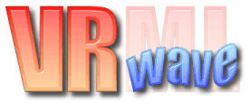

VRwave 0.9
Interactive 3D Virtual Reality Scene Viewer
- Authors
- Keith Andrews (kandrews@iicm.edu): VRwave project leader
- Michael Pichler (mpi@iicm.edu): VRwave X11 lead programmer
- Contributed by
- Meredith Whyles (mwhyles@merlyn.net)
- For more information, visit http://www.merlyn.net/.
- SCO "Skunkmom" Sponsor
- Ron Record (rr@sco.com)
- Obtained from
- ftp://ftp.iicm.edu/pub/VRwave/vrwave-0.9/VRwave-0.9-src.tar.gz
- ftp://ftp.iicm.edu/pub/VRwave/vrwave-0.9/UNIX/Common-VRwave-0.9-Unix.tar.gz
- Restrictions
- Refer to the COPYRIGHT and LICENCE files.
- Description
- VRwave is a freely available browser for 3D worlds and scenes modeled
in VRML 2.0 (the latest version of the Virtual Reality Modeling Language).
It is being developed by the Institute for Information Processing and Computer
Supported New Media (IICM) of Graz University of Technology, Austria, the
team who brought you the VRweb VRML 1.0 browser. Visit http://www.iicm.edu/
for information about the IICM.
- VRwave is the only free VRML browser
available in full source code which does not require commercial packages
such as Inventor or Motif and which will run on (almost) any Unix or Windows
platform. For more information on VRwave, visit http://www.iicm.edu/vrwave
. The new name VRwave is intended to distinguish the VRML 2.0 browser
written largely in Java from VRweb, which was written in C++. In terms
of look and feel, VRwave is a direct successor to VRweb. For more information
about VRweb, visit http://www.sco.com/skunkware/x11/viewers/
.
- Productivity
- This program displays VRML 2.0 files for the user to manipulate. When
used with a web browser, such as Netscape or Mosaic, this 3D viewer allows
access to the increasing number of web sites offering virtual reality content
and to the advanced HyperWave servers (formerly known as "Hyper-G").
HyperWave servers represent the next generation web solution for publishing
rich hypermedia documents in the Internet's World Wide Web and internal
TCP/IP networks. For more information about HyperWave, visit http://www.hyperwave.de/.
- Work Planned
- None
- Documentation
- Preliminary on-line help for VRwave is included in the archive
"Common-VRwave-0.9-Unix.tar.gz". For additional information,
view the VRweb User Guide at
http://www.iicm.edu/vrweb/help
.
- Verification
- Run "vrwave filename &"
(or "$VRWAVE_HOME/vrwave filename &"),
where filename is any VRML 2.0 file. If VRweb (the C++ predecessor
of VRwave) is executed, it will automatically invoke VRwave when a VRML
2.0 file is encountered. Both VRML 1.0 and VRML 2.0 files have a file suffix
of ".wrl".
- Known Limitations
- Currently, VRwave for Unix is unable to process VRML 1.0 files. For more
information, visit
http://hiwaay.net/~crispen/vrml/faq.html#q2.
How to get the source
Visit http://www.sco.com/skunkware/
or ftp://ftp.sco.com/skunkware/src/x11/viewers
to obtain a copy of the source in gzip format. To create the executable
from the source code (on OpenServer 5.0.4), follow these steps:
- Install the "SVR5 based UnixWare release (codenamed Gemini)"
version of the Universal Development Kit (UDK) and Java Development Kit 1.1 (JDK).
- Obtain (or build) and install the UDK version of the Mesa Graphics
Library (version 2.4), which is available from SCO SkunkWare. Only the two
primary Mesa libraries (libMesaGL.a and libMesaGLU.a) are required.
- Use ksh.
- Ensure that the execution search path includes the directory containing
the UDK C/C++ compilers (e.g., "/udk/usr/ccs/bin")
BEFORE any other compiler directories (e.g.,
"/usr/bin/" for the SCO Development System compilers).
- Execute the command: "export CPU=SCO".
- Decompress and untar the archive "vrwave-0.9.tar.gz".
- See file BUILDING for an installation guide.
- The unbuilt source directory hierarchy requires about 3 Meg, and the
built hierarchy requires about 5 Meg of disk space. The shared object
is under 1 Meg.
- Decompress and untar the archive "Common-VRwave-0.9-Unix.tar.gz".
- Set environment variable VRWAVE_HOME to the directory which was
created on unpacking the archive (vrwave-0.9). This directory
contains the vrwave wrapper script, help, icons, etc.